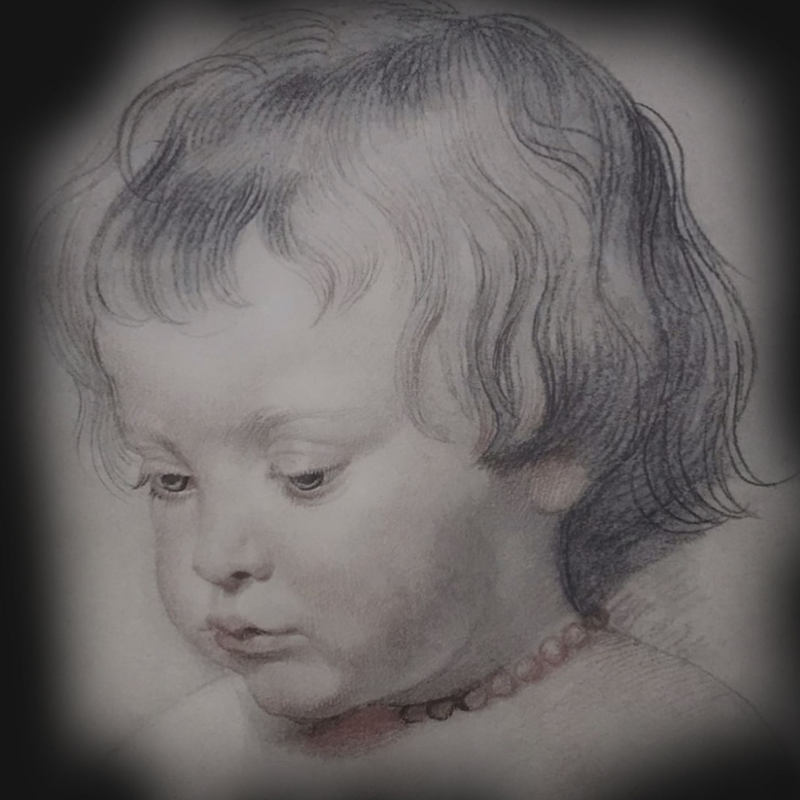

Không có thứ gọi là Nghệ thuật . Chỉ tồn tại các nghệ sĩ. Từ xa xưa,
có những người dùng đất màu và vẽ phác một con bò rừng lên vách đá
trong hang; ngày nay, họ tự mua màu vẽ cho mình, và thiết kế áp
phích cho những bảng biển quảng cáo; họ đã và đang làm đủ thứ việc
khác. Sẽ không có vấn đề gì nghiêm trọng nếu chúng ta gọi những hoạt
động này là nghệ thuật, miễn là ta nhớ rằng một từ như vậy mang ý
nghĩa khác nhau trong những thời điểm khác nhau tại những nơi khác
nhau, và rằng Nghệ thuật với chữ N viết hoa là không tồn tại. Nghệ
thuật với chữ N được viết hoa vốn mang nét nghĩa khác như thể một sự
huyền bí và tôn sùng. Bạn có thể làm bối rối một nghệ sĩ bằng cách
tán thưởng những gì anh ta vừa làm ra là tuyệt theo cách của riêng
nó kèm theo bình luận “Nhưng đó không phải là ‘Nghệ thuật’ đâu!”. Và
nếu thấy ai đang thưởng thức một bức tranh, hãy khiến người đó bất
ngờ bằng cách tuyên bố rằng điều anh thích không phải “Nghệ thuật”
mà là một điều gì đó khác.

1. Chân dung Nicholas - con trai Peter Paul Rubens
Tất nhiên, tôi hiểu rằng việc thích một bức tượng hay tranh không có
gì sai. Một người thích một bức tranh phong cảnh vì nó gợi nhắc về
nơi anh ta từng sống, hoặc một bức chân dung vì trông nó giống một
người bạn cũ. Không có gì là sai trái cho chuyện này. Mỗi bức họa
đều gợi nhắc chúng ta đến 101 thứ mà ta thích và không thích. Chừng
nào trí nhớ còn giúp ích cho quá trình thưởng ngoạn thì không có gì
đáng lo ngại. Còn khi có những ký ức không liên quan tạo ra thành
kiến, khi mà chúng ta quay đi một cách bản năng trước một kiệt tác
mô phỏng cảnh núi Alps chỉ vì chúng ta ghét leo núi, thì hãy thử tìm
kiếm trong tâm trí một lý do cho sự ác cảm đã cản trở quá trình
thưởng thức vui thú mà đáng lẽ chúng ta thể có được. Có những nguyên
nhân sai lầm dẫn đến việc chúng ta ghét bỏ một tác phẩm nghệ thuật.
Đa số mọi người kiếm tìm trong tranh những gì họ cũng muốn thấy
ngoài đời thực. Đó là xu hướng tự nhiên của con người. Chúng ta đều
thích cái đẹp trong thiên nhiên và biết ơn những nghệ sĩ “bảo tồn”
được cái đẹp ấy qua tác phẩm của họ. Các nghệ sĩ thì chẳng bao giờ
cự tuyệt ai vì vấn đề thị hiếu. Khi họa sĩ người Flanders Rubens vẽ
cậu con trai bé nhỏ của mình (hình 1), ông hẳn thấy tự hào về vẻ đẹp
của cậu bé. Ông muốn cả công chúng cũng phải xuýt xoa trước sự đáng
yêu ấy. Tuy nhiên, tính thiên vị cho những đề tài đẹp đẽ và hấp dẫn
lại có thể là vật ngáng đường nêu vì nó mà ta né tránh những đề tài
ít hấp dẫn hơn. Họa sĩ người Đức Albrecht Dürer chắc chắn cũng đã vẽ
mẹ mình (hình 2) với cùng niềm say mê và tình yêu như Rubens dành
cho cậu con trai phúng phính của ông.
Cách khắc họa hết sức chân thực của ông về sự già nua hao mòn có thể
khiến nhiều khán giả sửng sốt và quay đi – tuy vậy, nếu chúng ta
cưỡng lại được mối ác cảm ban đầu này thì có thể chúng ta sẽ nhận
được nhiều điều phong phú, bởi bức họa của Dürer tuyệt vời chính vì
tính trung thực dữ dội của nó. Thực tế, chúng ta sẽ sớm phát hiện ra
rằng vẻ đẹp của một bức tranh không nằm ở việc liệu đối tượng được
vẽ có đẹp hay không.